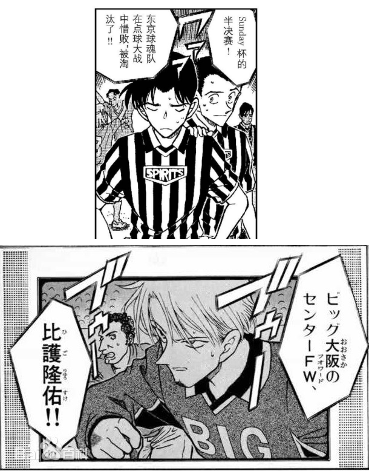
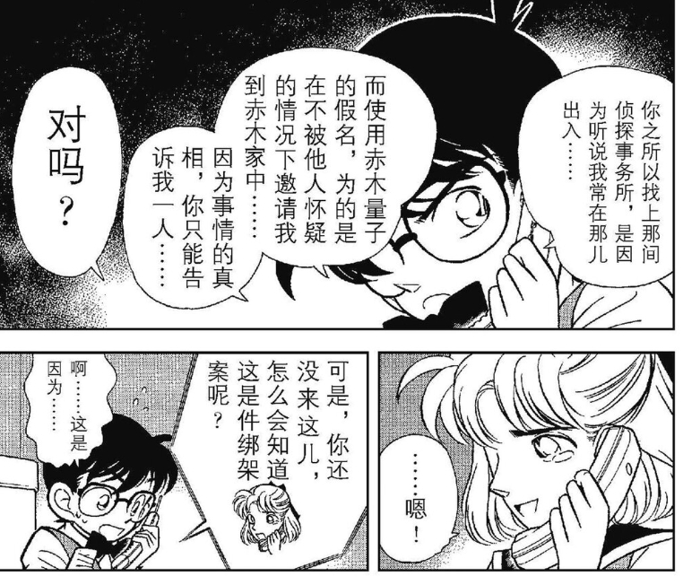
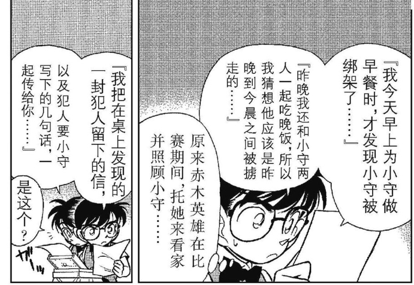
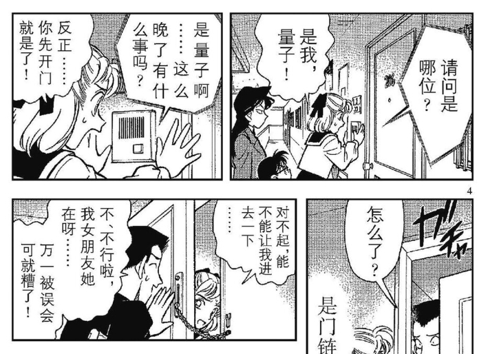
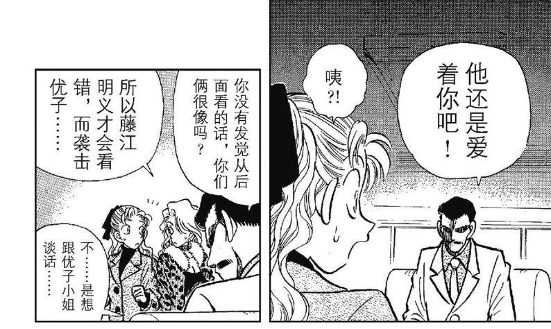
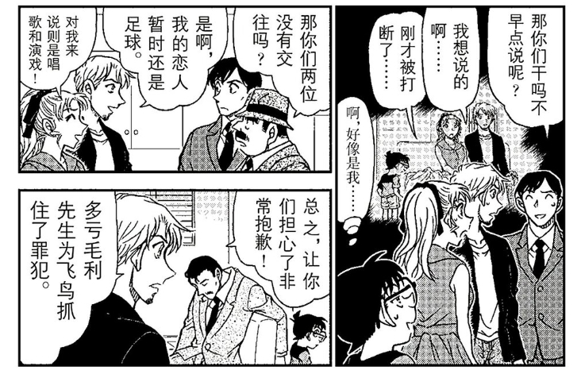
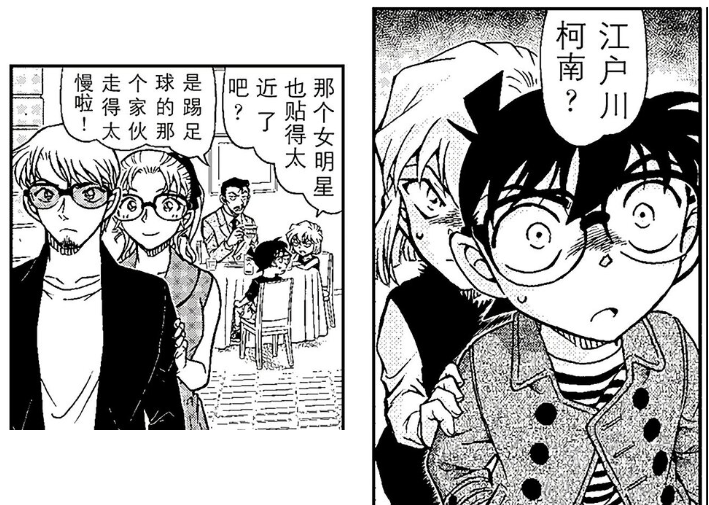
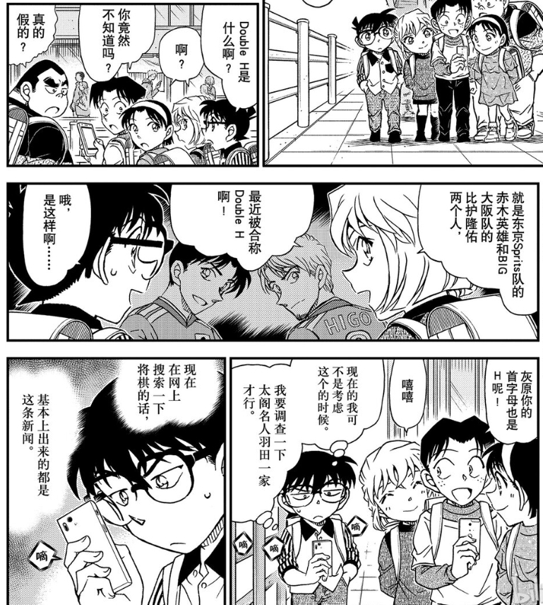

德比对于足球来说，有着特殊的意义。商业价值自然不必多说，皇马巴萨的国家德比转播权每赛季是单独出售的，你买了西甲的版权 ，还要单独买德比的版权。有的德比则是代表了一种习俗，比如多特和沙尔克，就是代表了工人大战资本家。
还有的德比火爆程度更是到了红刀子进白刀子出的地步，商业性不要了也要弄死你。德比能够增加比赛的对抗性，是竞技体育的最大卖点看点。
有德比关系的球队，往往会出现一些比较奇怪的精神状态。比如本赛季阿森纳和曼城在争冠军，热刺输给曼城后，完全没有因为自己失去欧冠席位而惋惜，反而因为自己送了曼城2分导致阿森纳拿不到冠军而开心。我是搞不懂这是什么心态哈。
本帖中，我主要想总结下名柯中的有德比关系的球队，东京魂队和大阪巨星。之所以总结这种事情，我总隐约感觉比护隆佑和赤木英雄和名柯的两条感情线有点联系。强调下，只是主观感觉有联系，没有任何证据。退一万步讲，没有联系也没关系，也就当统计个乐子了。
漫画中，魂队和巨星的正面德比我统计大概有3次，魂队稍微领先：
1、68至71，新一的恋人篇，魂队赢下了德比。
2、189至191，1月1日天皇杯，小哀转校过来的后和少年侦探团的第一个事件。大阪巨星赢下了德比。
3、997至999，红修片前，非同一般的手机链篇。魂队赢下了德比。
4、567至569（存疑），元太射门杀人事件，这里魂队输掉了比赛，但不确定对面是不是巨星队。
东京魂队获得了一次J联赛的冠军，并进行了冠军游行，366至373。这个系列的结尾是佐藤美和子删掉了松田阵平的短信，但表示会永远记住他。
还有的德比火爆程度更是到了红刀子进白刀子出的地步，商业性不要了也要弄死你。德比能够增加比赛的对抗性，是竞技体育的最大卖点看点。
有德比关系的球队，往往会出现一些比较奇怪的精神状态。比如本赛季阿森纳和曼城在争冠军，热刺输给曼城后，完全没有因为自己失去欧冠席位而惋惜，反而因为自己送了曼城2分导致阿森纳拿不到冠军而开心。我是搞不懂这是什么心态哈。
本帖中，我主要想总结下名柯中的有德比关系的球队，东京魂队和大阪巨星。之所以总结这种事情，我总隐约感觉比护隆佑和赤木英雄和名柯的两条感情线有点联系。强调下，只是主观感觉有联系，没有任何证据。退一万步讲，没有联系也没关系，也就当统计个乐子了。
漫画中，魂队和巨星的正面德比我统计大概有3次，魂队稍微领先：
1、68至71，新一的恋人篇，魂队赢下了德比。
2、189至191，1月1日天皇杯，小哀转校过来的后和少年侦探团的第一个事件。大阪巨星赢下了德比。
3、997至999，红修片前，非同一般的手机链篇。魂队赢下了德比。
4、567至569（存疑），元太射门杀人事件，这里魂队输掉了比赛，但不确定对面是不是巨星队。
东京魂队获得了一次J联赛的冠军，并进行了冠军游行，366至373。这个系列的结尾是佐藤美和子删掉了松田阵平的短信，但表示会永远记住他。

东京魂队当家球星赤木英雄，球衣11号。青梅竹马兼恋人应该是在68至71出现的赤木量子，漫画中提到赤木量子虽然姓赤木，但并不和赤木英雄两兄弟住在一起，应该不是兄妹。加上柯南分析出赤木量子是假名，之后直树又叫她为量子，说明量子是真名。凭她们相处的模式，我推论即便和英雄不是恋人，也应该是仅差一步的青梅竹马。



大阪巨星当家球星比护隆佑，球衣9号。原为东京诺瓦鲁（法语黑色）队主力，后转会到大阪巨星。绯闻女友是冲野洋子，两人是就读于同一高中，但是认识是在工作后认识的。6至9话中，冲野洋子的青梅竹马前男友潜入她家里自杀。925至927（樱花班篇后）绯闻传出后，两人纷纷否认，表示分别表示我现在的恋人是足球（唱歌和演戏）。


额，我不看体育竟技，所以有人能讲讲德比是啥意思?
2024-05-18 11:07 | 其它各种:比如北京有两个足球队，两边各有不少支持者，比赛就叫同城德比。北京最强的队和上海最强的队碰上了，这两个队又恰好是全国最强的队伍，就是国家德比。2024-05-18 11:15 | 贴吧用户_aA7UbGV:回复 其它各种 :哦，就是类似武侠小说的比武呗2024-05-18 11:17 | 其它各种:回复 贴吧用户_aA7UbGV :像华山论剑中的欧阳锋和洪七公，华山论剑定期举行，两个人又有很深的私人恩怨。2024-05-18 11:19 | 贴吧用户_aA7UbGV:回复 其它各种 :OK
但不管怎么说，好像东京魂队还是更有冠军相呢，毕竟目前战绩来看东京要比大阪强，英雄又没有转会风波，比投敌比护有优势呀。
剧场版也可以聊聊，比如有m16第十一个前锋是关于足球的,还有m9水平线上的阴谋，小柯把排球当足球来踢，产生了柯哀的经典构图，原以为小柯会照常说句抱歉，他却没有。在m9小柯有穿着东京队球衣，而小哀有穿着Big球衣。
2024-05-18 16:27 | 其它各种:这就是德比感，英雄的经历像新一，比护像哀。在1043中，比护和英雄在国家队被称为Double H，然后提到了灰原的首字母为H。我想说，福尔摩斯的首字母也为H。

阿森纳自己被维拉双杀了，然后得看别人脸色，然后阿森纳以前让热刺降级了
2024-05-18 16:15 | 其它各种:北伦敦德比嘛。不过这里提英超主要是讽刺对门，M26M27在争冠，对门见M26冠军丢了在开香槟。
接下来说推论，推论一，哀的形象对应比护，哀的恋情对应比护和冲野洋子。依据：1、比护和哀的相似不用多说吧，月台追妻篇就是明示了；2、比护和冲野洋子这一对是少有的非青梅竹马，且有前任的一对；3、遇到危机类似的抓肩膀的动作；4、双方都不自知，并不认为这是爱情，但在外人（读者）眼里，双方的关系关系不同寻常。在目前柯南的心中，推理和探案一定是放在第一位的，恋爱要靠后，谈恋爱和案子要是一起来，柯南会选择案子。
区别：1、比护和洋子同一个学校的，虽然不是青梅竹马，虽然双方现在是刚认识，但以前有过初遇。在目前初遇论还未收回的情况下，这一点是双方最大的区别。2、我相信比护和洋子确实是关系比较好的朋友，情侣什么的一定是绯闻。
区别：1、比护和洋子同一个学校的，虽然不是青梅竹马，虽然双方现在是刚认识，但以前有过初遇。在目前初遇论还未收回的情况下，这一点是双方最大的区别。2、我相信比护和洋子确实是关系比较好的朋友，情侣什么的一定是绯闻。

推论二，在推轮一成立的情况下，赤木英雄代表兰。两段不同的关系形成了竞争，在漫画外已经是事实了，双方粉丝的骂战，让我重回以前看球时做战斗粉的时候。比护和英雄的竞争，就是哀和兰的竞争，截止目前为止是对门有优势，这也是事实。
反驳点：名柯日常线也可以大致氛围少年侦探团线和毛利事务所线，除开柯南，哀是少年侦探团线的比护，但毛利事务所线的英雄一定不是兰，服部在的时候就不说了，核心一定是服部，服部不在的时候，其实也是由毛利老弟和园子姐姐代替柯南解决问题的。就德比的性质来说，从全篇来看，哀和兰不形成德比，单从感情线来看，哀和兰勉强形成德比。
反驳点：名柯日常线也可以大致氛围少年侦探团线和毛利事务所线，除开柯南，哀是少年侦探团线的比护，但毛利事务所线的英雄一定不是兰，服部在的时候就不说了，核心一定是服部，服部不在的时候，其实也是由毛利老弟和园子姐姐代替柯南解决问题的。就德比的性质来说，从全篇来看，哀和兰不形成德比，单从感情线来看，哀和兰勉强形成德比。
2024-05-19 01:09 | 贴吧用户_aGC8KNZ:赤木不代表兰，德比至少得知道有这么个对手，并经常对决，而兰不知道。比护和赤木关系很好，而兰哀根本不熟。2024-05-19 01:50 | 其它各种:回复 贴吧用户_aGC8KNZ :所以有推论三嘛
推论三，在推轮一成立的情况下，赤木英雄代表工藤新一。依据：1、英雄长得新一脸，本作长得像新一的都不简单。服部稍微化点妆，都可以模仿新一。2、赤木英雄的感情线和工藤新一类似。只看工藤新一状态下，双方的感情线是非常类似的，名柯中常见的青梅转正路线。
赤木英雄如果代表工藤新一，那不就代表双方只有竞争关系吗？和恋爱有什么关系呢？在足球比赛中除了俱乐部比赛，还有国家队比赛。1043话提到具有德比关系的比护和英雄，在国家队是队友，双方应该都表现的不错，被称为Double H组合。这种关系在现实是有很多例子的，比如拉莫斯和皮克，俱乐部打的头破血流，国家队比赛中是西班牙令人安心的后防组合。
另外，这里还提到了灰原首字母也是H，刚好福尔摩斯的首字母也是H，难道是暗示两个有德比关系的人合体后是福尔摩斯？巧合吧。
赤木英雄如果代表工藤新一，那不就代表双方只有竞争关系吗？和恋爱有什么关系呢？在足球比赛中除了俱乐部比赛，还有国家队比赛。1043话提到具有德比关系的比护和英雄，在国家队是队友，双方应该都表现的不错，被称为Double H组合。这种关系在现实是有很多例子的，比如拉莫斯和皮克，俱乐部打的头破血流，国家队比赛中是西班牙令人安心的后防组合。
另外，这里还提到了灰原首字母也是H，刚好福尔摩斯的首字母也是H，难道是暗示两个有德比关系的人合体后是福尔摩斯？巧合吧。

结论：灰原哀对应比护隆佑，工藤新一对应赤木英雄，是很可能成立的，双方携手取得成绩也是能和足球国家队比赛对应的。给人的感觉就和足球中的德比一样，有很深的纠葛，有惺惺相惜的情感，和爱情好像有点不一样，因为这种感情，即便没有爱情作为支撑，也是会存在的。就如同哀和柯的关系，他们就算互相没有男女间的喜欢，也已经形成了深厚的羁绊。
那如果赤木对照兰，m16中大阪队进球柯南欢呼
针对热刺的心态，我这个老足球人插一句:比起主队赢球更开心的是死敌输球
2024-06-02 21:51 | 贴吧用户_GW24QZU:只能说反正也拿不了冠军，那赢球真不如让死敌四大皆空
英雄跟比护应该是代表的新一跟小哀。不过青山会用德比来比喻这两人也着实没想到。因为小哀是黑组来的，所以两人有竞争关系？哀又弃暗投明象征两人惺惺相惜？
题外话，我一直觉得老贼写比护的时候参考了菲戈，既视感好强，就差扔个猪头了
题外话，我一直觉得老贼写比护的时候参考了菲戈
，既视感好强，就差扔个猪头了2024-05-20 02:54 | 其它各种:俱乐部比赛是对手，国家队比赛是队友，比护和英雄被称为Double H，灰原首字母是H，福尔摩斯首字母也是H。